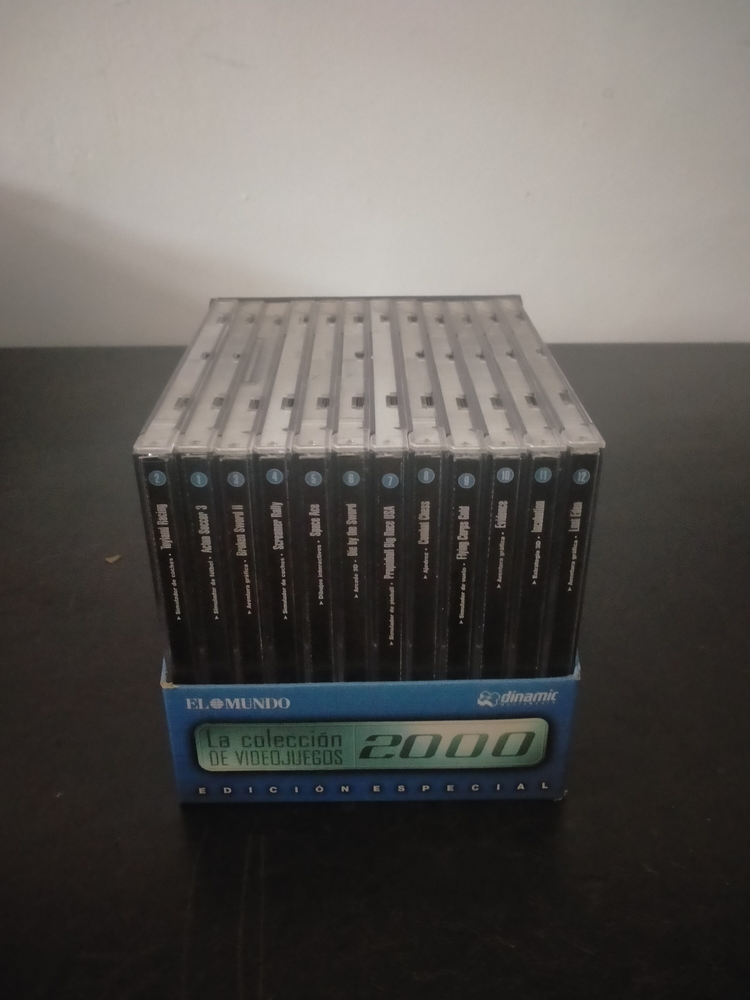

Ficha #000000
La colección de videojuegos 2000: Edición especial
La colección de videojuegos 2000: Edición especial es una recopilación española para PC distribuida en el año 2000 por el diario El Mundo en colaboración con Dinamic Multimedia. Reúne doce lanzamientos comerciales en cajas jewel case numeradas y presentadas conjuntamente en un expositor de cartón. Su catálogo ofrece una muestra transversal del videojuego europeo de los años noventa, incluyendo deporte, conducción arcade, aventura gráfica, animación interactiva, acción tridimensional, pinball, ajedrez, simulación aérea y estrategia táctica. La colección está formada por Actua Soccer 3, Toyland Racing, Broken Sword II: Las Fuerzas del Mal, Screamer Rally, Space Ace, Die by the Sword, Pro Pinball: Big Race USA, Combat Chess, Flying Corps Gold, Evidence: The Last Report, Incubation: Se te está acabando el tiempo y Lost Eden. Como edición de quiosco constituye un documento representativo de la popularización del videojuego físico para PC en España mediante prensa generalista y colecciones de precio reducido.
- Formato
- Jewel Case
- Plataforma
- MsDos Win95 Win98
- Género
- Compilación Aventura gráfica Acción Carreras Estrategia Simulación deportiva Pinball Ajedrez
- Serie
- Todos Jewel Case Dinamic multimedia
- Desarrollador
- Gremlin Interactive, Revistronic, Revolution Software, Milestone, ReadySoft, Treyarch, Cunning Developments, Minds Eye Productions, Rowan Software, Microïds, Blue Byte Software, Cryo Interactive
- Distribuidor
- Dinamic Multimedia, El Mundo
- EAN
- —
Contenido de la edición
- Expositor exterior de cartón
- 12 cajas jewel case numeradas
- Actua Soccer 3
- Toyland Racing
- Broken Sword II: Las Fuerzas del Mal
- Screamer Rally
- Space Ace
- Die by the Sword
- Pro Pinball: Big Race USA
- Combat Chess
- Flying Corps Gold
- Evidence: The Last Report
- Incubation: Se te está acabando el tiempo
- Lost Eden
- CD-ROM de cada entrega
- Carátulas impresas
Preservación
- Protección
- Otro
- Formato recomendado
- BIN/CUE
- Jugable en virtualización
- Sí
La colección debe preservarse mediante imágenes independientes de cada CD-ROM, preferiblemente en formato BIN/CUE para conservar posibles pistas de audio y estructuras originales. Conviene documentar la numeración de las doce entregas, escanear las carátulas y el expositor exterior, y verificar individualmente los sistemas de comprobación de disco o consulta documental presentes en cada juego.